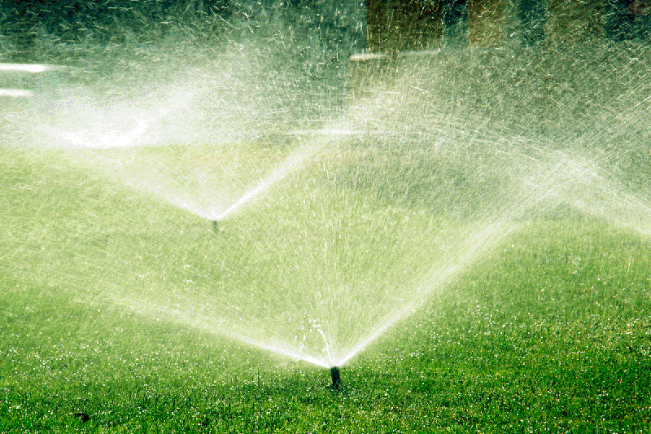

1. De grond voorbereiden
Verwijder eerst alle begroeiing (struiken, onkruid, ...) en spit vervolgens de grond om.
Op deze website leer je hoe je met grasmatten een heel nieuw gazon kan aanleggen. Om grasmatten te leggen moet je wel wat kennis van zaken hebben en de toestemming van de eigenaar van de grond. Ben je nog niet meerderjarig en wil je de tuin van je ouders heraanleggen? Vraag hen dan expliciet om hun toestemming vooraleer je de tuin begint om te woelen.
Verwijder eerst alle begroeiing (struiken, onkruid, ...) en spit vervolgens de grond om.
Trap de losgewerkte aarde aan en maak de grond effen - dat heet egaliseren. De grond moet helemaal vlak liggen, zonder putjes. Druk de grond tenslotte aan met een tuinwals.

Rol de grasmatten zo uit dat ze perfect op elkaar aansluiten. Leg ze in halfsteensverband. Snijd de grasmatten af met een scherp mes of met de spade.
Om de grasmatten wortel te laten schieten, moeten ze de eerste twee weken overvloedig besproeid worden.
